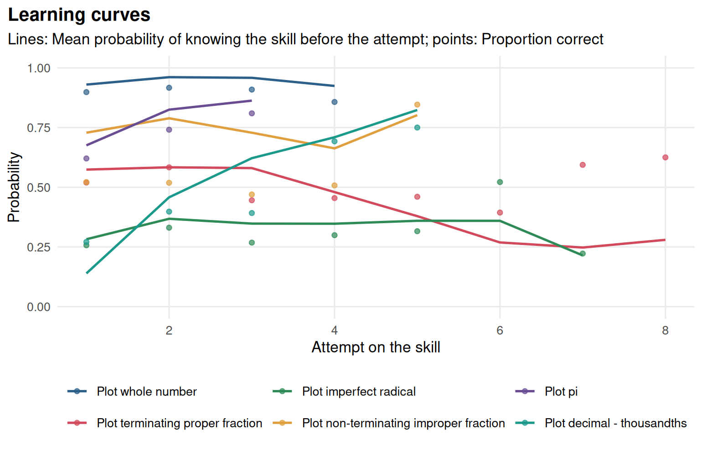
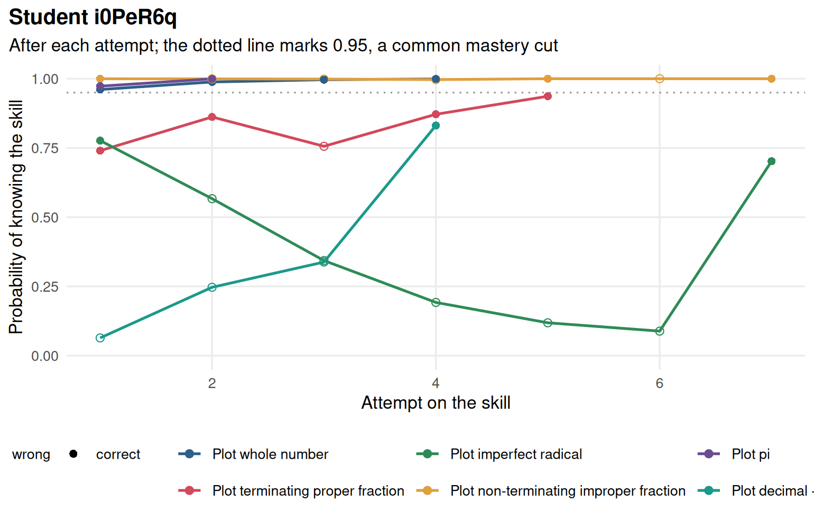
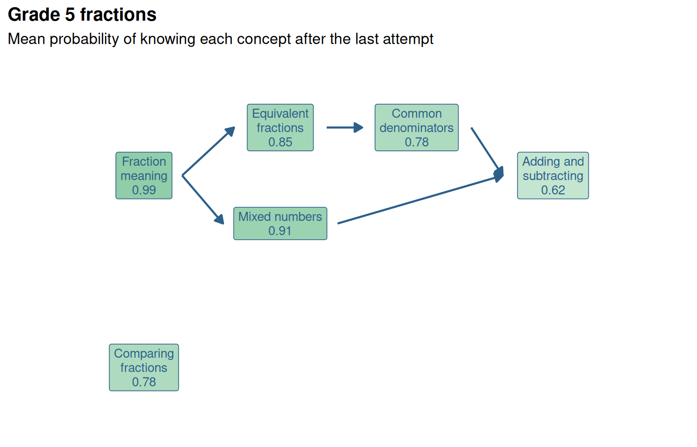

Chapter 20 Knowledge tracing
Learning goals. After this chapter you can
- explain how Bayesian knowledge tracing (BKT) follows a student’s mastery of a skill from one practice attempt to the next, and what its four parameters mean;
- fit BKT to practice logs with
mv_kt_fit(), including the variants with forgetting and with a guess and a slip per item, and judge the models by cross-validation withmv_kt_cv(); - compare BKT with a Rasch model on the same logs with
mv_kt_irt(), and relate BKT’s guess parameters to IRT item difficulty; - draw mastery over time and on a knowledge graph with
gg_kt(), and check a graph’s prerequisites against practice logs withmv_kt_prereq().
Key terms: Knowledge tracing, knowledge graph, attribute hierarchy, cross-validation, likelihood-ratio test.
The functions in this chapter are experimental: Their arguments and output may still change.
20.1 The ideas
IRT assumes that a student’s ability stays the same while they answer the test. That is reasonable for a one-hour exam, but not for an online tutor, where students practise a skill until they get it. In practice logs, the interesting question is not how able a student is, but whether they have learned the skill yet, and when.
Bayesian knowledge tracing (Corbett and Anderson 1995) answers it with a hidden Markov model. Each skill is either known or not known. Four probabilities describe each skill:
prior: The probability that a student knows the skill before the first attempt;learn: The probability that a student who does not know the skill learns it after an attempt (with feedback);guess: The probability of a correct answer without knowing the skill;slip: The probability of a wrong answer while knowing it.
After every answer, Bayes’ rule updates the probability that the student knows the skill. A correct answer raises it, a wrong one lowers it, and then the chance of learning moves it up before the next attempt:
\[ P(L_t \mid \text{correct}) = \frac{P(L_t)(1 - S)}{P(L_t)(1 - S) + (1 - P(L_t))G}, \qquad P(L_{t+1}) = P(L_t \mid \text{answer}) + (1 - P(L_t \mid \text{answer}))\,T, \]
where \(S\) is the slip, \(G\) the guess and \(T\) the learn rate. The parameters are estimated by expectation-maximization, skill by skill, as the pyBKT library does (Badrinath et al. 2021). Bulut et al. (2023) introduce BKT with pyBKT for psychometricians; this chapter follows their examples in R.
BKT and IRT are close relatives (Deonovic et al. 2018). The guess parameter of a skill, or of an item when each item has its own (the item difficulty effect model, KT-IDEM; Pardos and Heffernan (2011)), plays the role of item difficulty: Items that are easy to answer without knowing the skill are easy items. What BKT adds is learning: The latent state changes during the logs.
20.2 Example 1: Plotting skills in a Cognitive Tutor
cognitive_tutor holds the practice logs used in the pyBKT examples
(Stamper et al. 2010): 587 students’ first attempts at 16,857 problem steps in a
mathematics tutor, each tagged with one of 12 skills. Following Bulut et
al. (2023), we start with the six skills about plotting numbers
on a number line.
head(logs)
#> # A tibble: 6 × 7
#> student problem step skill correct opportunity time
#> <chr> <chr> <chr> <chr> <int> <int> <dttm>
#> 1 745Yh RATIO2-001 SimplifiedNu… Calc… 1 1 2006-11-14 10:18:05
#> 2 745Yh RATIO2-001 SimplifiedNu… Calc… 0 2 2006-11-14 10:18:17
#> 3 745Yh RATIO2-012 SimplifiedNu… Calc… 0 3 2006-11-14 10:50:57
#> 4 745Yh RATIO2-012 SimplifiedNu… Calc… 1 4 2006-11-14 10:51:14
#> 5 745Yh RATIO2-054 SimplifiedNu… Calc… 0 5 2006-11-28 09:53:47
#> 6 745Yh RATIO2-054 SimplifiedNu… Calc… 1 6 2006-11-28 09:54:14
plot_skills <- grep("^Plot", unique(logs$skill), value = TRUE)
kt <- mv_kt_fit(logs, skills = plot_skills, seed = 1)
kt
#> <mv_kt> (EXPERIMENTAL) Bayesian knowledge tracing
#> 6 skill(s), 258 student(s), 4336 attempt(s)
#> skill prior learn guess slip
#> Plot whole number 0.930 0.449 0.500 0.071
#> Plot terminating proper fraction 0.574 0.027 0.318 0.328
#> Plot imperfect radical 0.282 0.134 0.080 0.289
#> Plot non-terminating improper fraction 0.728 0.231 0.000 0.309
#> Plot pi 0.676 0.624 0.051 0.108
#> Plot decimal - thousandths 0.139 0.397 0.203 0.338
#> Fit on the same logs: RMSE 0.450, accuracy 0.674, AUC 0.745The parameters tell a story about each skill. Plotting whole numbers is
known by almost everyone from the start (prior 0.93), so the model has
little to learn from these logs; its guess reaches the upper bound of 0.5
that keeps known and not-known students apart. Plotting pi is learned
quickly (learn 0.62), and plotting terminating proper fractions slowly
(0.03), with a high slip: Students who probably know it still make many
mistakes. A skill with a guess of 0 and a slip of 0.31, such as plotting
non-terminating improper fractions, says that a correct answer is strong
evidence of knowing the skill but a wrong one is weak evidence of not
knowing it.

Figure 20.1: Learning curves for the plotting skills: The mean probability of knowing each skill before each attempt (lines) and the proportion of correct answers (points).
One student’s record shows the updating at work.
student <- names(which.max(table(logs$student[logs$skill %in% plot_skills])))
gg_kt(kt, student = student)
Figure 20.2: One student’s probability of knowing each plotting skill after every attempt: Filled points are correct answers.
20.2.1 Variants
pyBKT’s two most used variants are available as arguments: forgets = TRUE lets a known skill be forgotten, and multigs = TRUE gives each item
(here each problem) its own guess and slip.
kt_f <- mv_kt_fit(logs, skills = plot_skills, forgets = TRUE, seed = 1)
kt_g <- mv_kt_fit(logs, item = "problem", skills = plot_skills, multigs = TRUE, seed = 1)
rbind(standard = glance(kt), forgets = glance(kt_f), multigs = glance(kt_g))
#> # A tibble: 3 × 9
#> n_skills n_students n_attempts loglik AIC BIC rmse accuracy auc
#> * <int> <int> <int> <dbl> <dbl> <dbl> <dbl> <dbl> <dbl>
#> 1 6 258 4336 -2552. 5163. 5354. 0.450 0.674 0.745
#> 2 6 258 4336 -2551. 5174. 5404. 0.450 0.674 0.745
#> 3 6 258 4336 -2313. 5054. 6418. 0.424 0.726 0.805Forgetting adds nothing here: The log-likelihood barely moves and AIC goes up. Item guess and slip fit much better (AIC drops by more than 100 and the AUC rises from 0.75 to 0.81), but they add 184 parameters, and BIC prefers the standard model. Fit on the same logs always flatters the bigger model, so the fair test is new students.
cv <- mv_kt_cv(logs, skills = plot_skills, folds = 3, seed = 1)
cv_g <- mv_kt_cv(logs, item = "problem", skills = plot_skills, multigs = TRUE,
folds = 3, seed = 1)
merge(cv[cv$fold == "mean", c("skill", "rmse", "auc")],
cv_g[cv_g$fold == "mean", c("skill", "rmse", "auc")],
by = "skill", suffixes = c("_standard", "_multigs"))
#> skill rmse_standard auc_standard
#> 1 Plot decimal - thousandths 0.472 0.622
#> 2 Plot imperfect radical 0.437 0.643
#> 3 Plot non-terminating improper fraction 0.482 0.651
#> 4 Plot pi 0.462 0.581
#> 5 Plot terminating proper fraction 0.498 0.569
#> 6 Plot whole number 0.292 0.514
#> rmse_multigs auc_multigs
#> 1 0.454 0.705
#> 2 0.440 0.657
#> 3 0.492 0.629
#> 4 0.453 0.667
#> 5 0.471 0.704
#> 6 0.284 0.696On held-out students the item model still predicts better for most skills, especially the ones with many problems, such as plotting terminating proper fractions. The cross-validated RMSE of the standard model (0.29 for plotting whole numbers, 0.46 for plotting pi) is close to what Bulut et al. (2023) report from pyBKT.
20.3 Example 2: Knowledge tracing and IRT
How does BKT compare with an IRT model on the same logs? mv_kt_irt()
holds out the last 30% of each student’s attempts on each skill, fits both
models to the rest, and forecasts the held-out answers. The IRT model is a
Rasch model with crossed random effects for students and items, fitted
with lme4.
cmp <- mv_kt_irt(logs, item = "problem", skills = plot_skills, seed = 1)
cmp
#> <mv_kt_irt> (EXPERIMENTAL) Knowledge tracing vs IRT on the same logs
#> Forecasts of the last 30% of each student's attempts (6 skill(s)):
#> BKT: RMSE 0.451, accuracy 0.584, AUC 0.759
#> IRT (1PL): RMSE 0.445, accuracy 0.633, AUC 0.723
#> (means over skills)
#> IRT item difficulty vs log BKT guess: Median correlation -0.89 over 6 skill(s)
tidy(cmp)
#> # A tibble: 12 × 6
#> skill model n_test rmse accuracy auc
#> <chr> <chr> <int> <dbl> <dbl> <dbl>
#> 1 Plot whole number BKT 66 0.156 1 NA
#> 2 Plot whole number IRT (1PL) 66 0.147 1 NA
#> 3 Plot terminating proper fraction BKT 253 0.541 0.356 0.750
#> 4 Plot terminating proper fraction IRT (1PL) 253 0.497 0.601 0.752
#> 5 Plot imperfect radical BKT 206 0.551 0.578 0.725
#> 6 Plot imperfect radical IRT (1PL) 206 0.517 0.578 0.745
#> 7 Plot non-terminating improper fraction BKT 150 0.550 0.38 0.753
#> 8 Plot non-terminating improper fraction IRT (1PL) 150 0.515 0.48 0.721
#> 9 Plot pi BKT 21 0.371 0.905 0.842
#> 10 Plot pi IRT (1PL) 21 0.420 0.762 0.816
#> 11 Plot decimal - thousandths BKT 74 0.540 0.284 0.724
#> 12 Plot decimal - thousandths IRT (1PL) 74 0.573 0.378 0.583The two models forecast about equally well. BKT ranks the answers a little better on average (a mean AUC of 0.76 against 0.72), because it updates after every answer, while IRT keeps each student’s ability fixed. IRT has the lower RMSE and the higher accuracy for three of the skills, because its item difficulties capture differences between problems that the standard BKT model ignores. Neither model is right: Students learn and items differ, and each model captures one of the two.
The second half of the output connects the parameters.
tidy(cmp, "items")
#> # A tibble: 6 × 3
#> skill n_items correlation
#> <chr> <int> <dbl>
#> 1 Plot whole number 9 -0.897
#> 2 Plot terminating proper fraction 31 -0.867
#> 3 Plot imperfect radical 21 -0.888
#> 4 Plot non-terminating improper fraction 13 -0.602
#> 5 Plot pi 10 -0.910
#> 6 Plot decimal - thousandths 14 -0.944For every skill, the IRT difficulty of a problem is strongly correlated with the log of its BKT guess, with a median of about -0.89: The easier the problem, the more often students who do not know the skill still get it right. Bulut et al. (2023) report correlations between 0.55 and 0.94 (in absolute value) for the same skills. When item guess and slip are estimated, BKT’s guess parameter is an item difficulty in disguise.
20.4 Example 3: Practice on a knowledge graph
Chapter 19 described the Grade 5 fractions test as a
knowledge graph. fractions_logs holds simulated practice logs on the same
items: 400 students practise the six concepts in blocks, mostly in the
curriculum order, until they answer three in a row correctly.
The logs have no skill column. With kg, mv_kt_fit() maps each item to
the concepts it measures in the graph.
head(practice)
#> # A tibble: 6 × 4
#> student attempt item correct
#> <chr> <int> <chr> <int>
#> 1 P001 1 F01 0
#> 2 P001 2 F02 1
#> 3 P001 3 F04 1
#> 4 P001 4 F02 1
#> 5 P001 5 F11 0
#> 6 P001 6 F10 1
kt_fr <- mv_kt_fit(practice, kg = kg, seed = 1)
kt_fr
#> <mv_kt> (EXPERIMENTAL) Bayesian knowledge tracing
#> 6 skill(s), 400 student(s), 20338 attempt(s)
#> skill prior learn guess slip
#> meaning 0.473 0.314 0.213 0.105
#> equivalent 0.128 0.136 0.173 0.116
#> mixed 0.072 0.174 0.176 0.101
#> compare 0.027 0.116 0.193 0.033
#> common_denominator 0.015 0.118 0.241 0.080
#> add_subtract 0.001 0.072 0.198 0.114
#> Fit on the same logs: RMSE 0.452, accuracy 0.695, AUC 0.718
Figure 20.3: The fractions graph shaded by the mean probability of knowing each concept after the last practice attempt.
The graph view shows where the class stands: Nearly everyone has fraction
meaning, and adding and subtracting is the least secure. For one student,
gg_kt(kt_fr, student = "P001", type = "graph") gives the same picture, a
diagnostic report that follows the graph.
20.4.1 Checking prerequisites against the logs
A prerequisite is a claim about learning: A student who does not know
equivalent fractions should struggle to learn to add fractions with
unlike denominators. Practice logs can test that claim directly.
mv_kt_prereq() estimates, for every pair of concepts A and B, the learn
rate of B on the attempts made while A was probably known and on those
made while it was not, and tests the difference with a likelihood ratio
test. Each test uses only the attempts where B’s other prerequisites in the
graph are already known, so an indirect prerequisite adds little.
check <- mv_kt_prereq(kt_fr)
check
#> <mv_kt_prereq> (EXPERIMENTAL) Prerequisites checked against practice logs
#> Graph: Grade 5 fractions; 5 prerequisite edge(s), 5 supported by the logs
#> 1 flag(s)
#> * [missing_prerequisite] compare is learned 10.1 times as fast once
#> equivalent is known (learn 0.17 vs 0.02, LR = 155.6); add the
#> prerequisite equivalent -> compare?
head(tidy(check)[, c("from", "to", "edge", "learn_without", "learn_with", "ratio", "lr", "verdict")], 8)
#> # A tibble: 8 × 8
#> from to edge learn_without learn_with ratio lr verdict
#> <chr> <chr> <lgl> <dbl> <dbl> <dbl> <dbl> <chr>
#> 1 equivalent compare FALSE 0.0173 0.175 10.1 156. "missi…
#> 2 common_denominator add_su… TRUE 0.0263 0.127 4.82 96.6 "suppo…
#> 3 meaning equiva… TRUE 0.0620 0.211 3.39 89.4 "suppo…
#> 4 equivalent common… TRUE 0.0186 0.153 8.22 88.4 "suppo…
#> 5 meaning mixed TRUE 0.0594 0.202 3.40 44.0 "suppo…
#> 6 mixed add_su… TRUE 0.0196 0.127 6.46 23.9 "suppo…
#> 7 common_denominator mixed FALSE 0.195 0.430 2.20 11.1 ""
#> 8 equivalent add_su… FALSE 0.0393 0.133 3.40 9.69 ""All five prerequisites of the graph are supported: Each concept is learned
three to eight times as fast once its prerequisite is known. The
strongest effect in the logs, though, is not in the graph: Comparing
fractions is learned ten times as fast once equivalent fractions are
known. This is the edge the published graph misses, the same one that
mv_kg_fit() found in the test answers in Chapter
19. Two independent kinds of evidence, a test taken
once and practice over time, point to the same repair.
kg2 <- mv_kg_edit(kg, add = data.frame(from = "equivalent", to = "compare"))
mv_kt_prereq(kt_fr, kg = kg2)
#> <mv_kt_prereq> (EXPERIMENTAL) Prerequisites checked against practice logs
#> Graph: Grade 5 fractions; 6 prerequisite edge(s), 6 supported by the logs
#> No flags: The logs agree with the graph's prerequisites.With the edge added, the logs agree with the graph. Practice logs have one more advantage over a test: The direction of a prerequisite is in the data. Equivalent fractions speed up learning to compare, and not the other way round, so no assumption about which concept is easier is needed.
The learn rates of the first model also make sense now. They are lower than the rates the logs were simulated with (for example 0.12 against 0.20 for comparing fractions), because some students practised a concept before its prerequisites and learned it slowly. A single learn rate per skill averages over both groups; the graph explains why learning is uneven.
20.5 Your turn
- Fit the standard model to all 12 skills of
cognitive_tutor. Which skill has the lowest learn rate, and what would you tell the tutor’s designers about it? - Refit the plotting skills with both
forgets = TRUEandmultigs = TRUE. Does forgetting help once items have their own guess and slip? - Run
mv_kt_irt()on the three “Finding the intersection” skills. Which model forecasts better, and why might that be? - Add a wrong prerequisite,
mixed -> compare, to the fractions graph (together withequivalent -> compare) and runmv_kt_prereq(). What does it report?
Solutions
# 1. all skills
kt_all <- mv_kt_fit(logs, seed = 1)
p <- tidy(kt_all)
p[order(p$learn), c("skill", "prior", "learn", "guess", "slip")][1:3, ]
#> # A tibble: 3 × 5
#> skill prior learn guess slip
#> <chr> <dbl> <dbl> <dbl> <dbl>
#> 1 Plot terminating proper fraction 0.574 0.0266 0.318 0.328
#> 2 Finding the intersection, Mixed 0.430 0.0503 0.338 0.324
#> 3 Finding the intersection, GLF 0.128 0.0543 0.466 0.0103
# 2. both variants
kt_fg <- mv_kt_fit(logs, item = "problem", skills = plot_skills, multigs = TRUE,
forgets = TRUE, seed = 1)
rbind(multigs = glance(kt_g), both = glance(kt_fg))
#> # A tibble: 2 × 9
#> n_skills n_students n_attempts loglik AIC BIC rmse accuracy auc
#> * <int> <int> <int> <dbl> <dbl> <dbl> <dbl> <dbl> <dbl>
#> 1 6 258 4336 -2313. 5054. 6418. 0.424 0.726 0.805
#> 2 6 258 4336 -2313. 5066. 6469. 0.424 0.726 0.805
# 3. intersection skills
inter <- grep("^Finding", unique(logs$skill), value = TRUE)
mv_kt_irt(logs, item = "problem", skills = inter, seed = 1)
#> <mv_kt_irt> (EXPERIMENTAL) Knowledge tracing vs IRT on the same logs
#> Forecasts of the last 30% of each student's attempts (3 skill(s)):
#> BKT: RMSE 0.493, accuracy 0.573, AUC 0.585
#> IRT (1PL): RMSE 0.440, accuracy 0.715, AUC 0.765
#> (means over skills)
#> IRT item difficulty vs log BKT guess: Median correlation -0.89 over 3 skill(s)
# 4. a wrong prerequisite
kg3 <- mv_kg_edit(kg, add = data.frame(from = c("equivalent", "mixed"),
to = c("compare", "compare")))
mv_kt_prereq(kt_fr, kg = kg3)
#> <mv_kt_prereq> (EXPERIMENTAL) Prerequisites checked against practice logs
#> Graph: Grade 5 fractions; 7 prerequisite edge(s), 6 supported by the logs
#> 1 flag(s)
#> * [weak_prerequisite] The logs show little effect of mixed on learning
#> compare (learn 0.17 vs 0.17, p = 0.90); is mixed -> compare a
#> prerequisite?- Plotting terminating proper fractions has the lowest learn rate (about 0.03): Students barely improve with practice. The designers should look at the feedback and hints for this skill, or split it into smaller skills; it may also be two skills tagged as one, which BKT would see as slow learning with many slips.
- No: The log-likelihood is the same and AIC rises. Wrong answers by students who seemed to know a skill are explained by item slips, not by forgetting.
- IRT forecasts better for these skills. Each has few students (about 70) and items that differ a lot in difficulty, which the Rasch model captures and the standard BKT model does not; with sparse sequences there is also little learning for BKT to track.
- It flags
mixed -> compareas a weak prerequisite: Comparing fractions is learned just as fast whether or not a student knows mixed numbers. The check works in both directions, finding missing edges and questioning ones that are there.
Further reading
Corbett and Anderson (1995) introduced knowledge tracing in the ACT Programming Tutor. Badrinath, Wang and Pardos (2021) describe pyBKT and its variants, and Bulut et al. (2023) introduce BKT for readers who know IRT, with the examples this chapter follows. Pardos and Heffernan (2011) add item difficulty to knowledge tracing, and Deonovic et al. (2018) work out the formal relation between BKT and IRT. Deep knowledge tracing (Piech et al. 2015) replaces the hidden Markov model with a recurrent neural network; it needs much larger logs, and its predictions are harder to interpret.